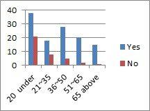
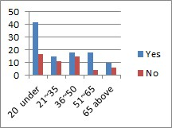
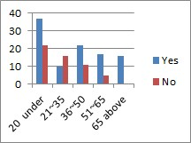
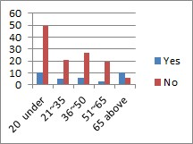
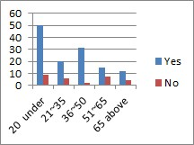
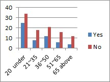
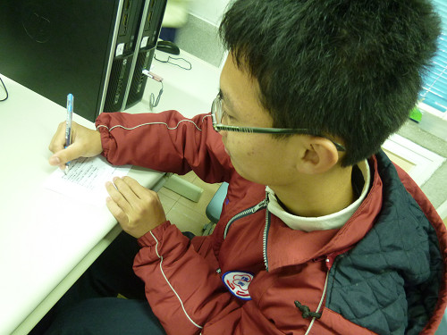

|
|
Survey > Statistics
The statistics of the survey gives us a surprising result. There is little difference from our predictions.
Age Analysis of the Survey Takers:
| 20 year-old and under |
59 persons |
| 21~35 year-old |
26 persons |
| 36~50 year-old |
33 persons |
| 51~65 year-old |
22 persons |
| 65 year-old and above |
16 persons |
| Total |
156 persons |
Survey Results Statistic:
| 1. Do you know what the traditional folk art is? Which ones do you know? |
| 20 year-old and under |
Yes: 64.4 % 38 persons
No: 35.6 % 21 persons |
 |
| 21~35 year-old |
Yes: 69.2 % 18 persons
No: 30.8 % 8 persons |
| 36~50 year-old |
Yes: 84.8 % 28 persons
No: 15.2 % 5 persons |
| 51~65 year-old |
Yes: 90.9 % 20 persons
No: 9.0 % 2 persons |
| 65 year-old and above |
Yes: 93.8 % 15 persons
No: 6.3 % 1 persons |
Yes – Sugar Painting: 8 persons; Diabolo: 1 person; Dough: 53 persons; Shadow puppetry: 21 persons; Puppet Show: 3 persons; Taiwanese Opera: 35 persons; Spinning Top: 23 persons; Sugar Blowing: 9 persons
Most answers are “yes”. For those who answered “no”, we shared our brief report and knowledge of these traditional arts with them. After sharing, we realized that they have not heard the term “Traditional Art”, but they did know about dough, shadow puppetry, and such. The older they are, the more likely they are to know what these are. Since Teacher Huang has started teaching these arts, his students usually know about them. |
| 2. Many people have strived to promote the traditional folk arts in Hsienhsi. Do you know Hsing-wu Huang? (What does he promote?) |
| 20 year-old and under |
Yes: 71.2% 42 persons
No: 28.8% 17 persons |
 |
21~35 year-old
|
Yes: 57.7% 15 persons
No: 43.3% 11 persons |
| 36~50 year-old |
Yes: 54.5% 18 persons
No: 45.5% 15 persons |
| 51~65 year-old |
Yes: 81.8% 18 persons
No: 19.2% 4 persons |
| 65 year-old and above |
Yes: 62.5% 10 persons
No: 37.5% 6 persons |
Yes, Community Volunteer Service (Development): 21 persons, Dough: 69 persons, Lohan Drum: 6 persons, Shadow puppetry: 15 persons
Teacher Huang has started to teach in junior high schools and elementary schools, so lots of students know him. Among those who answer “yes” and dough (69 persons), 41 persons are under 20 year-old; there are 42 persons under the age of 20 who took the survey, so almost all of the group knows him. More elders know him through the community volunteer service. |
| 3. Have you been involved in the art of dough? (Do you like it?) |
| 20 year-old and under |
Yes: 62.7% 37 persons
No: 37.3% 22 persons |
 |
| 21~35 year-old |
Yes: 38.5 % 10 persons
No: 61.5% 16 persons |
| 36~50 year-old |
Yes: 66.7 % 22 persons
No: 33.3% 11 persons |
| 51~65 year-old |
Yes: 77.3% 17 persons
No: 22.7% 5 persons |
| 65 year-old and above |
Yes: 100% 16 persons
No: 0% 0 person |
Yes, Like Very Much: 37 persons, Like: 44 persons, Fair: 16 persons, Don’t Like: 5 persons
Some local schools have added dough art into the curriculum; the students gradually learn more about it. Besides, all the residents above 65 have experienced it; exactly as Teacher Huang said, that in the previous rural life, residents often got together to play things. |
| 4. Do you know the history of dough (procedure of inheritance)? |
| 20 year-old and under |
Yes: 16.9% 10 persons
No: 83.1% 49 persons |
 |
| 21~35 year-old |
Yes: 19.2% 5 persons
No: 80.8% 21 persons |
| 36~50 year-old |
Yes: 18.2% 6 persons
No: 81.8% 27 persons |
| 51~65 year-old |
Yes: 13.6% 3 persons
No: 86.4% 19 persons |
| 65 year-old and above |
Yes: 63% 10 persons
No: 37% 6 persons |
Yes, Southern region of Yangzi River: 15 persons, Taiwan: 9 persons, Northern China: 10 persons
We are surprised that only a few people know the history of dough. The 15 persons selecting the Southern region of Yangzi River is due to their place of origin. Actually, northern China is the origin; the elders and the educated students have the right answer. |
| 5. Do you know another traditional folk art – shadow puppetry? |
| 20 year-old and under |
Yes: 84.7% 50 persons
No: 15.3% 9 persons |
 |
| 21~35 year-old |
Yes: 76.9% 20 persons
No: 23.1% 6 persons |
| 36~50 year-old |
Yes: 93.9% 31 persons
No: 6.1% 2 persons |
| 51~65 year-old |
Yes: 68.2% 15 persons
No: 31.8% 7 persons |
| 65 year-old and above |
Yes: 75% 12 persons
No: 25% 4 persons |
| 6. Have you ever played shadow puppetry with your own hands? |
| 20 year-old and under |
Yes: 42.4% 25 persons
No: 57.6% 34 persons |
 |
| 21~35 year-old |
Yes: 30.8% 8 persons
No: 69.2% 18 persons |
| 36~50 year-old |
Yes: 36.4% 12 persons
No: 63.6% 21 persons |
| 51~65 year-old |
Yes: 27.3% 6 persons
No: 72.7% 16 persons |
| 65 year-old and above |
Yes: 25% 4 persons
No: 75% 12 persons |
EX1: Hope to have more traditional art activities in Hsienhsi. (Ms. Cheng, from Hsienhsi)
EX2: Hope more traditional arts are promoted. (Hsien-Hsi Junior High School students)
 |
Students receive our survey and ask various questions. |
(The text and pictures on these pages were based on interview transcriptions, photographs and writing taken by the project team)

|